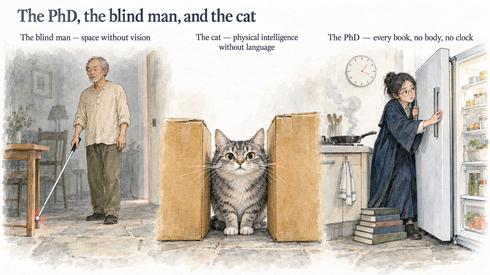
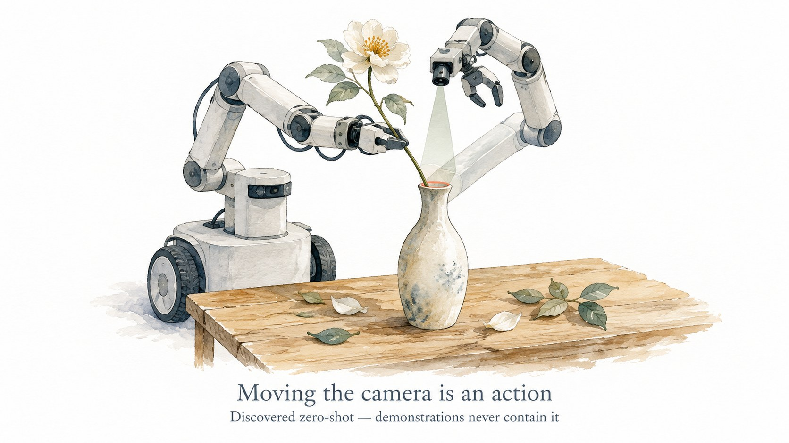
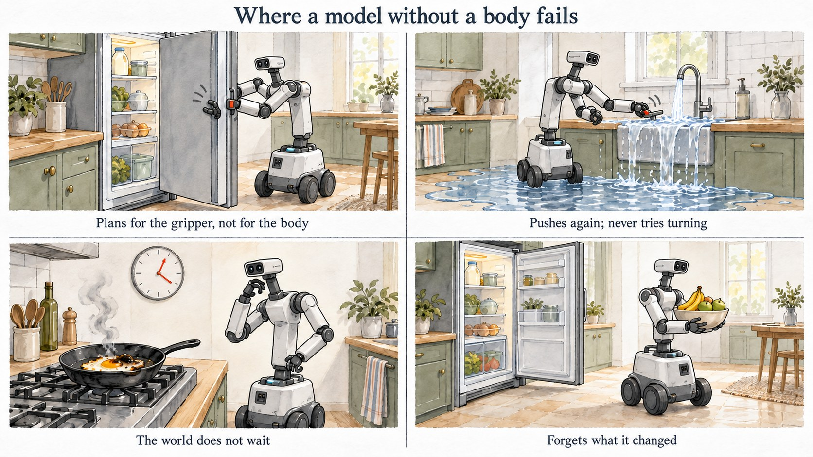
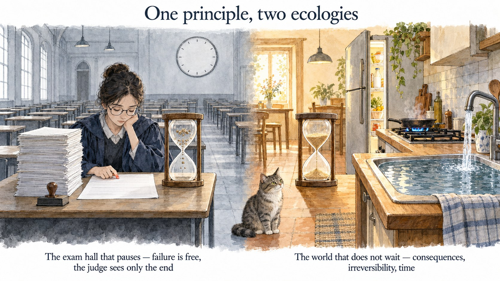
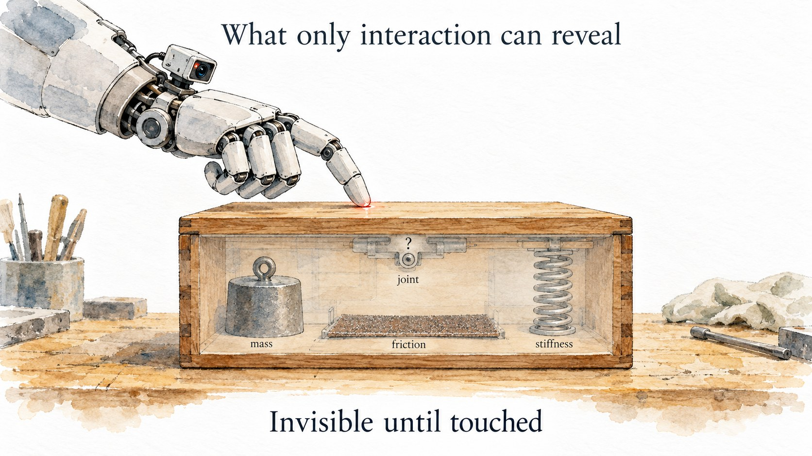
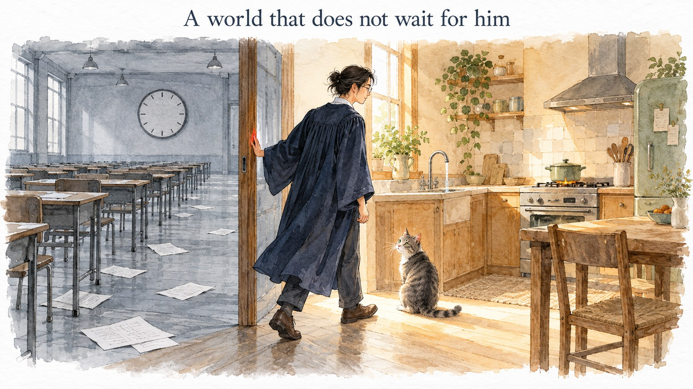

The PhD, the Blind Man, and the Cat
GPT-6 is putting a flower into a vase with a two-armed robot. The wrist camera on the arm holding the flower cannot see the mouth of the vase. So it swings the free arm over until that arm’s camera looks straight into the opening, and then slides the stem in. Nobody taught it that move. Teleoperated demonstrations almost never contain it: a human demonstrator watches the scene through their own eyes and rarely moves a camera just to see better.
The same model, in a kitchen that does not pause, puts the milk in the fridge and turns to carry fruit to the table, leaving the fridge door open behind it for minutes. When the egg in the pan is done, it begins, unhurriedly, to consider turning off the burner. By the time the burner is off, the egg has burnt.
Both are true, and for the same reason. Everything it can do is in the books. Everything it cannot do is in no book; it is known only to a body that has touched the world. And the world it grew up in never asked it to touch anything.
That is the whole of what this essay has to say. Does a good representation need to be designed by hand? Must physical understanding come from vision? GPT-6 has made both questions obsolete; the answer to each is no. The question worth asking comes after. An agent grows the capabilities its world demands of it. So what kind of world would force it to grow the part it is missing?
Don’t design the representation. Design the pressure.

The blind man has no vision and the cat has no language, yet both have complete physical intelligence. The PhD has read every book and watched every video; what he lacks is a body, and a world that pushes back.
1. The PhD who has read every book
Start with what it can do. A general-purpose model with no body, and no representation designed for physics, can push a set of standard embodied benchmarks close to saturation once it may learn in context from demonstrations and gets enough attempts. It drives a range of real robots zero-shot, from single and dual arms to dexterous hands and a humanoid. It recovers from failure, corrects its actions with depth and touch, and adapts demonstrations to the scene in front of it instead of replaying them.

That is why both questions are obsolete. A good representation does not need to be hand-designed: this model’s internal representation was never designed for physics; it is a by-product of scale and general objectives. Physical understanding does not have to come from vision either: people born blind build spatial structure from touch, hearing, and movement, and can even infer shortcuts they have never walked. What is indispensable is not a modality but a structure of information: state changing in continuous time, viewpoint and self-motion, occlusion and persistence, actions and their consequences. That structure exists, abundantly and second-hand, in internet video and in the vast body of text in which people describe the physical world. The PhD learned most of the world from books.
But only most of it.
2. Four things it is missing
Divide basic physical intelligence into five groups (objectness, intuitive physics, body-relative affordances, perception-action causality, active perception), add two more, a persistent state of the whole world and time (sources for all seven are in the note at the end), and hold GPT-6’s behavior in the kitchen and on real robots up against them. The result is strikingly tidy:
| Capability | Verdict | Signature behavior |
|---|---|---|
| Objectness | Mostly there | Persistence, identity, occlusion all handled |
| Intuitive physics | Semantic yes, decision no | Knows the egg will burn; turns the burner off too late |
| Body-relative affordances | Missing | Fridge door blocks its own arm; elbow sweeps the desk |
| Perception-action causality | Missing | Pushes the tap again and again; takes image overlap for a hung mug |
| Active perception and exploration | A seed | Moves the camera only when blocked |
| Persistent state of the whole world | Missing | Leaves the fridge door open |
| Time | Missing | Reasons as if the world paused |
One-line diagnosis: Everything it has can be learned second-hand from books and video: things persist behind occluders, eggs burn, spilled water does not come back. The four things it lacks can only be acquired first-hand.
It does not plan for its own body. Taking something out of the fridge, it holds the door with one arm from a spot where the open door sits exactly between its other arm and the shelf; it lets go of the handle to reach in, the door swings shut, and it starts over. Tidying a desk with a book in its gripper, its elbow knocks the monitor askew and sweeps other things onto the floor. On real hardware, picking and placing is reliable; plug insertion, which needs precise contact, fails almost every time. A cat knows whether it fits through the gap. This model does not.
It does not use actions to test hypotheses. Faced with an unfamiliar tap, it pushes, gets no water, and keeps pushing with small adjustments instead of thinking “maybe it turns” and trying that; the sink fills and spills onto the floor. It often cannot tell looking done from being done: it takes a mug handle overlapping a peg in the image for a hung mug, and its fingers closing for a grasp.
It does not keep track of the whole world. It attends to the thing in its hand. The rest of the world, including the parts it changed itself, enters its thinking only when something blocks the next step. The fridge door stands open while it carries fruit; graded on the final state, the episode passes, because the door is closed by the end.
It has no sense of time. It reasons as if the world paused; on a real robot, most of a task’s duration is spent thinking. “The egg is almost done” is in its knowledge, but not in its rhythm.
Even its active vision is only a seed. It moves the camera when it is blocked, not to reduce uncertainty. Before it is blocked, it never asks itself what it is sure of, what it is not, and where to look to tell the two apart.

3. Not a problem of representation, but of ecology
These four gaps are not random weaknesses. They are faces of one thing: an internal state that accounts for your own body, the changes you have made, what you cannot see, and the time that is passing, plus the habit of testing that state by acting. That is what a world model is. It is supposed to emerge on its own. Why didn’t it?
Look first at where animals get theirs. Nobody designs a cat’s world model. All a cat has to do is eat, jump onto the table, squeeze through a gap, avoid danger. But whenever what it sees is not enough to decide the next move, it has to compress its past into an internal state: where I am, where things are, what is hidden, what just happened, which possibilities remain. A cat that cannot tell “I know” from “I don’t know” misjudges the jump and gets stuck. In a world that is partially observable, keeps changing, and punishes mistakes, a world model is the most economical shared solution to countless small problems at once. It is not designed. It is forced into existence.
Run the argument in reverse and you get the central claim of this essay:
If the world pauses, failure is free, demonstrations are provided, and the judge looks only at the final result, then the most economical solution is to keep no world model at all.

The left side of the figure is where GPT-6 grew up. The simulator stops while it thinks. Failed attempts can be retried and leave no trace. Every task comes with demonstrations to adapt. Success is checked by a few rules at the final moment: once “cooked” is true it stays true, burnt counts as cooked, and no rule asks for the burner to be turned off. In that exam hall, it is the most economical solution. Its failure list is the list of everything that exam hall never asked for. The right side is where the cat grew up.
Aside: Visual representations do not escape this either. Probing a set of frozen visual representations for how much spatial structure they encode, we found that spatial layout can be read out, but many of them are insensitive to the temporal order of the observations. “A purely visual representation is a world model by nature” does not hold. A world model is an intrinsic property of neither visual nor linguistic representations; it appears where the training loop requires it.
So a good representation need not be designed; what needs designing is the pressure. Hand-designed representations, from edge detectors to hand-defined state, have always been the losing side. Hand-designed pressure is precisely what nature did: gravity, hunger, predators, irreversibility, time.
4. What the pressure should look like
Seen this way, a good representation is no longer a feature vector you can pull out and inspect. It is a set of behaviors that can only be measured in a world that does not wait: remembering what you changed; keeping a calibrated doubt about what you cannot see (the layout beyond the field of view, an object’s mass and friction, whether a mechanism pushes or turns) and knowing what to do to resolve it; treating “done” as a physical question rather than a visual one; knowing where your body is; knowing that time is passing.

An agent that persists over time, varied tasks, partial observability, data produced by the agent’s own actions: these are old conditions borrowed from biological development, and today’s training environments have most of them. GPT-6’s failure list says a few more are missing:
- The world does not wait. Thinking time runs on the world’s clock, observations go stale, and when something gets done matters as much as what gets done.
- Failure costs something, and some of it cannot be undone. Success cannot be bought with more attempts; spilled water does not come back.
- No demonstrations. Experience comes from acting. Where to look, how to place the body, how an unfamiliar mechanism works all have to be found out by trying, and demonstrations never contained active vision anyway.
- The judge watches the whole episode, not just the last moment. It grades physical quantities hidden from the agent, such as the egg’s core temperature rather than a “cooked” label; and the obligations nobody states, like closing the fridge or turning off the tap and the stove, count alongside the explicit instruction.
What kind of training environment makes a policy that forms no world model unable to survive in the long run? That question now has a concrete shape.
5. The blind man, the cat, and the PhD
Back to the three characters in the title.
The blind man has no vision, but he has a world that pushes back: the wall is there, the table corner is there, one wrong step and he walks into it. From touch and movement he builds the structure of a whole room. He shows that pressure does not care about the modality; given the right structure of information, any channel will do.
The cat has no language, yet has the most complete physical intelligence of the three. Nobody designed her world model; gaps, table edges, and prey that runs forced it into existence. She has never read a book and has never wedged herself into a space she could not pass through, because she has paid for that mistake before.
The PhD has read every book and watched every video, and the world has never once pushed back. GPT-6 is this PhD. He is far stronger than I expected: he knows how fridge doors open, knows that eggs burn, even moves the camera to where it can see. Yet he wedges himself between the fridge door and the counter, pushes the tap again and again, and lets the egg burn in the pan. Not because he is stupid, but because he has spent his whole life in an exam hall that pauses, allows endless retries, and grades only the final answer; he is the optimal solution to that exam.
In the end, the field has spent these years on the student: bigger models, better representations, more books and more video. GPT-6 shows how far that road goes, and where it ends. The exam hall that pauses will keep setting papers, the PhD will keep scoring well, and the egg in the kitchen will keep burning. Every benchmark that pauses, allows retries, and grades only the final state rewards a policy that keeps no world model; progress on the leaderboard and failure in the kitchen can run side by side indefinitely.
What leverage remains is not in the student but in the exam. What the next generation of models lacks is not more books, but a world that does not wait for it, and does not forgive it.

Note: where the seven capabilities come from
The seven are this essay’s own grouping, not an existing taxonomy, but each one sits on an established line of research:
- Objectness: the object system in Spelke & Kinzler’s core knowledge (2007); Baillargeon’s violation-of-expectation studies; the IntPhys benchmark (Riochet et al.).
- Intuitive physics: Battaglia, Hamrick & Tenenbaum (2013); the review by Kubricht, Holyoak & Lu (2017); benchmarks such as Physion.
- Body-relative affordances: Gibson (1979); Warren’s stair-climbing study (1984); Adolph’s work on infant locomotion; body schema in Head & Holmes (1911) and Iriki et al. (1996).
- Perception-action causality: sensorimotor contingencies (O’Regan & Noë 2001); Held & Hein (1963); epistemic actions (Kirsh & Maglio 1994); Gopnik and colleagues on causal learning; Stahl & Feigenson (2015).
- Active perception: Bajcsy (1988), Aloimonos et al. (1988), Ballard (1991), and Bajcsy, Aloimonos & Tsotsos (2018); Yarbus (1967); Hayhoe & Ballard (2005).
- A persistent state of the whole world: belief states in POMDPs (Kaelbling, Littman & Cassandra 1998); situation awareness (Endsley 1995); cognitive maps (Tolman 1948); spatial updating during self-motion (Wang & Spelke 2000).
- Time: tau and time-to-contact (Lee 1976); prospective control in infants (von Hofsten 1980); anytime algorithms (Dean & Boddy 1988); bounded rationality (Russell & Wefald 1991); Brooks (1991).
The criteria behind the first five (present before language, shared across species, tied directly to survival and action, learnable from perception-action experience) follow Spelke’s definition of core knowledge. Existing taxonomies of intuitive physics mostly cover the first two; placing the next three beside them is this essay’s choice, and the last two come from AI and ecological psychology rather than developmental psychology.
References
The observations about GPT-6 come from:
- Has GPT-6-Astra Achieved Embodied Intelligence? arXiv:2610.22471
- Large Multimodal Models for Direct Robot Control: GPT-6 as a Beginning arXiv:2610.28259
Cite this post
@misc{yin2026phdblindcat,
title = {The PhD, the Blind Man, and the Cat},
author = {Yin, Baiqiao},
year = {2026},
month = {October},
howpublished = {Blog post},
url = {https://yyyybq.github.io/blog/phd-blind-man-and-cat/en.html}
}